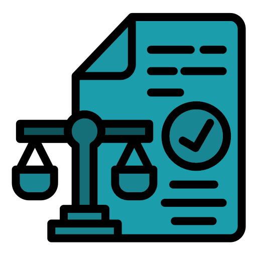
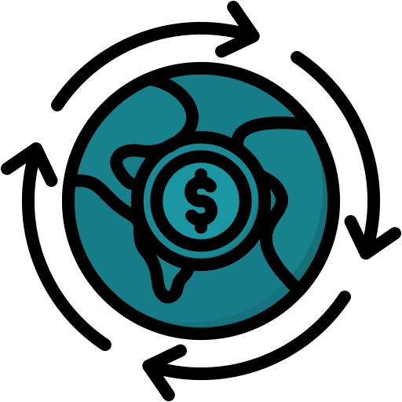
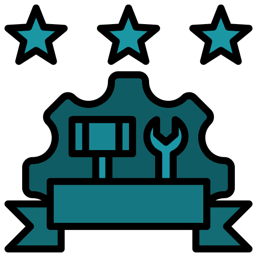
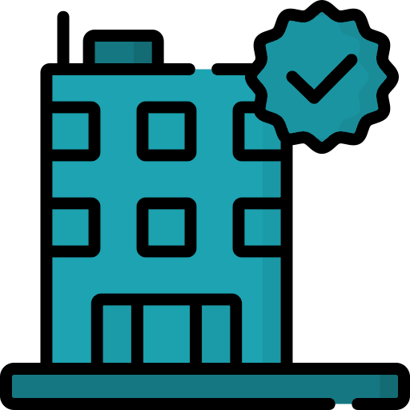
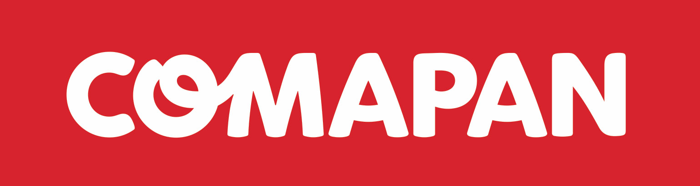
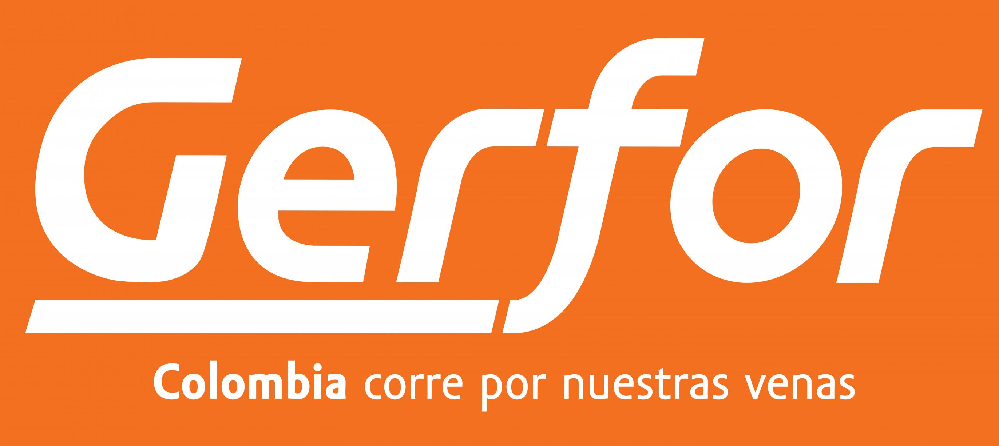
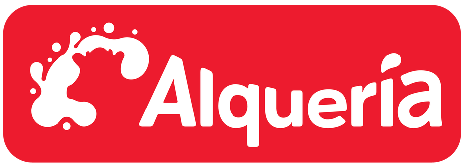
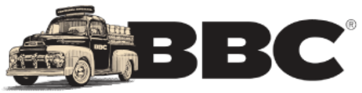

Líderes en
Servicios de saneamiento
Saneamiento seguro y sin preocupaciones. Nos encargamos de tus residuos y aguas residuales con procesos certificados, garantizando cumplimiento legal y total tranquilidad.
Contactanos ahoraCómo funciona nuestro proceso
-
Recoleccion y transporte
Recolectamos y transportamos residuos orgánicos e industriales desde su origen, asegurando cumplimiento normativo y trazabilidad.
-
Tratamiento especializado
Aplicamos procesos técnicos y ambientales para el tratamiento eficiente de residuos, lodos y aguas residuales.
-
Disposicion final segura
Realizamos la disposición o reutilización según normativas ambientales, minimizando el impacto y garantizando sostenibilidad.
-
La única empresa con Licencia Ambiental
Planeta SAS ESP cuenta con la única Licencia Ambiental otorgada en su categoría, garantizando operaciones legales, sostenibles y con el más alto estándar en gestión ambiental.
-

Más de 10 años de experiencia.
Con una trayectoria sólida, la empresa ha prestado servicios especializados de saneamiento y manejo de residuos en múltiples municipios, demostrando confiabilidad y profesionalismo.
-
Certificación en calidad y procesos sostenibles.
Planeta SAS ESP está certificada bajo normas de calidad ISO, lo que respalda su compromiso con la mejora continua y la sostenibilidad en cada uno de sus procesos.
-

Alta capacidad operativa
Anualmente gestionamos más de 74.000 toneladas de lodos y 140.000 toneladas de aguas residuales, ofreciendo respuesta confiable para operaciones de gran escala.
Para empresas y gestores ambientales
-
Soluciones sanitarias para el manejo ambiental responsable -
Gestión legal y eficiente de residuos. Solicita tu diagnóstico sin costo.
- Agenda tu asesoría ahora
-

Legalidad garantizada
Contamos con licencia ambiental vigente y nuestra operación está 100 % avalada por la CAR, garantizando confianza y cumplimiento legal.
-

Economía Circular real
Transformamos residuos orgánicos en acondicionadores de suelos, aportando a la restauración geomorfológica y a prácticas sostenibles.
-

Equipos especializados
Disponemos de vehículos y sistemas para succión, transporte y tratamiento de lodos y aguas, con personal técnico capacitado
-

Planta propia
Tratamos directamente los residuos en nuestras instalaciones, lo que optimiza costos, reduce tiempos y asegura control total del proceso.
Clientes que transforman sus residuos en
sostenibilidad.
-
Por cada cliente nuevo sembramos un árbol Así, cada alianza con Planeta SAS ESP también contribuye al futuro del planeta. -
Clientes que ya transforman sus residuos en sostenibilidad
-
- 
- 
- 
-

- 
-

-
¿Quiénes Somos?
Desde nuestra fundación, hemos asumido el compromiso de satisfacer las necesidades de nuestros clientes y grupos de interés con la más alta calidad. Nuestra gestión se fundamenta en principios de sostenibilidad, innovación tecnológica y cumplimiento riguroso de las normativas técnicas y legales. - Descubre más acerca de nosotros
-
Nuestros Servicios
-
Ofrecemos soluciones integrales para la gestión, tratamiento y disposición segura de residuos orgánicos e industriales.
Contáctanos ahora
Disposición de aguas residuales.
Realizamos el tratamiento de aguas residuales e industriales no peligrosas
-
Cumplimiento de la normatividad ambiental vigente.
Procesos técnicos eficientes y controlados.
-
Disposición final adecuada en planta autorizada.
Lavado y desinfección de tanques.
Limpieza y desinfección profesional de tanques domesticos, industriales y toda clase
-
Personal capacitado con protocolos certificados.
-
Servicio periódico o bajo demanda según necesidad del cliente.
-
Limpieza Industrial y de Equipos Especializados
Pozos sépticos y trampas de grasa.
Limpieza, succión y disposición adecuada de residuos en pozos sépticos y trampas de grasa
Prevención de reboses y malos olores.
-
Succión y transporte con vehículos especializados.
-
Disposición certificada según normativas ambientales vigentes.
Proceso de compostaje.
Transformación de residuos orgánicos en compost mediante procesos controlados
Aprovechamiento de residuos.
-
Producción de acondicionadores de suelos.
-
Proceso realizado bajo normativas ambientales.
Sondeo e inspección de redes.
Sondeo e inspección visual de redes de alcantarillado con equipos especializados.
-
Equipos de inspección por cámara para evaluación de tuberías.
-
Identificación de obstrucciones, daños o desgastes estructurales.
-
Apoyo técnico para planes de mantenimiento y rehabilitación.
Deshidratación de lodos.
Reducción de volumen de los lodos mediante procesos de separación.
-
Procesos eficientes de separación sólido-líquido.
-
Equipos móviles para operación en sitio del cliente.
-
Optimización logística y reducción de costos en disposición.
Transporte especializado.
Movilización de residuos líquidos y semisólidos con vehículos adecuados
-
Vehículos tipo vactor y tanques certificados.
-
Personal capacitado en manejo y seguridad.
-
Trazabilidad y disposición en plantas autorizadas.
Manejo de residuos peligrosos.
Recolección, transporte y tratamiento de residuos peligrosos
-
Transporte autorizado y trazabilidad completa.
-
Personal capacitado y protocolos especializados.
-
Disposición final en instalaciones certificadas.
Servicios complementarios.
Lavado de áreas, suministro de agua potable y asistencia técnica.
-
Lavado y desinfección de superficies contaminadas.
-
Suministro y transporte de agua potable.
-
Asistencia técnica en campo según requerimientos del cliente.
-
¿Necesitas un servicio a medida?
-
Comunícate con nosotros y recibe asesoría personalizada para la gestión ambiental y de residuos de tu empresa.
Contáctanos ahora
¿Tienes más preguntas acerca de Planeta?
Consulta nuestras preguntas frecuentes para obtener respuestas detalladas o comunícate con nosotros directamente: ¡estaremos encantados de ayudarte!
-
¿Qué riesgos existen si contrato un dispositor no certificado legalmente?
Los generadores de residuos son legalmente responsables de su disposición. Si el proceso se realiza con un operador no certificado, pueden enfrentarse a sanciones ambientales, multas y problemas legales.
-
¿Qué tipo de residuos manejan?
Gestionamos residuos orgánicos, aguas residuales, lodos y residuos no peligrosos.
-
¿Están certificados para operar legalmente?
Sí, contamos con licencias emitidas por la CAR , ICA y el Ministerio de Transporte.
-
¿En qué zonas prestan servicio?
Operamos principalmente en Cundinamarca, Bogotá y regiones aledañas. Para otras zonas, puedes consultarnos directamente.